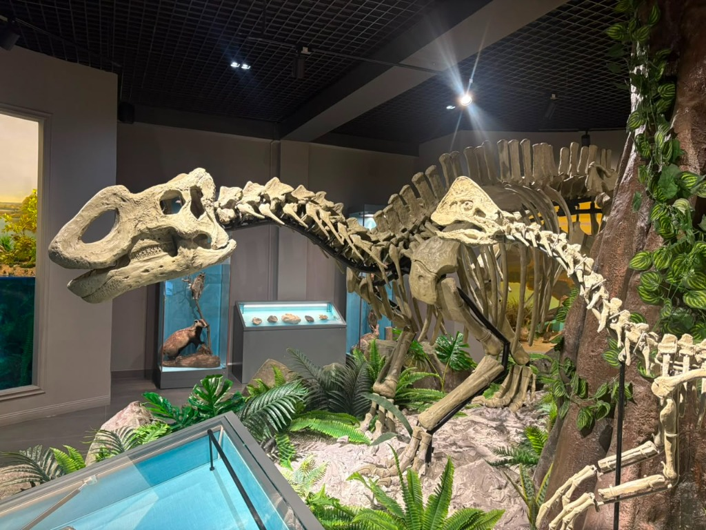

Палеонтологиялық карта және локациялар
Интерактивті картадағы нүктелерді басып, Сырдария өңіріндегі негізгі қазба орындары туралы ақпарат алыңыз.
Локацияны таңдаңыз
Картадағы белгілерді басу арқылы сол жердің палеонтологиялық сипаттамасын ашыңыз.
Түлкілі (Қанқазған)

Қызылорда облысы, Жосалы бекетінен солтүстік-шығысқа қарай орналасқан әйгілі палеонтологиялық орын. Жалаңаштанған қызыл сазды төбелерден тұрады.
Мұнда 1968 жылы КСРО ҒА палеонтологы А.К. Рождественский басқарған экспедиция тарихи жаңалық ашты — жаңа динозавр түрі Аралозаврдың бас сүйегін тапты.
Негізгі табындылар:
- Аралозавр (Гадрозавр тұқымдасы)
- Қолтырауындардың тістері мен сауыттары
- Ежелгі балықтар мен қосмекенділер
Бостөбе формациясы

Геологиялық тұрғыдан өте бай аумақ. Бор кезеңінде бұл аймақ Сырдария өзенінің немесе оның арғы аталарының ежелгі кең атырауы (дельта) болған.
Шөгінділер негізінен қызыл, қоңыр және сары құмтастар мен саздардан тұрады. Бұл жылы, оттегіге бай субтропикалық климаттың белгісі. Бұл аймақтан табылған сүйектер көбінесе су ағысымен шайылып, бір жерге жиналған (сүйек линзалары).
Негізгі табындылар:
- Птерозаврлар (Аждархо)
- Су тасбақалары (Adocus) көптеп саналады
- Динозавр жұмыртқаларының қабықтары (сирек)
- Өсімдік споралары мен тозаңдары
С.-Ш. Арал маңы
Арал теңізінің Солтүстік-Шығыс ежелгі жағалаулары, Сырдарияның құяр сағасы. Динозаврлар қырылғаннан кейінгі кайнозой эрасының шөгінділері басым.
Бұл аймақта ежелгі таяз теңіздердің (Тетис мұхитының қалдықтары) тартылуы мен пайда болу процестері жақсы байқалады. Теңіз фаунасына өте бай.
Негізгі табындылар:
- Ежелгі акулалардың тістері (Striatolamia т.б.)
- Скаттардың тіс пластиналары
- Қосжақтаулы және басаяқты теңіз ұлулары
Палеоортаны қалпына келтіру
Уақыт машинасы: 85 миллион жыл бұрын Сырдария өңірі қандай বুলেট болды?
Климат
Өте жылы, ылғалды, субтропикалық. Қыс болмаған, тек маусымдық жауын-шашын кезеңдері ауысып тұрған.
География
Қуаң даланың орнында кең өзен атыраулары, таяз лагуналар, батпақтар болған. Батыста ежелгі Тетис мұхиты жатқан.
Экожүйе
Жағалаулар қалың қырықжапырақтар мен алып қылқанжапырақты ормандарға толы. Онда динозавр үйірлері еркін жайылған.
Қазба деректерінен палеоортаны қалпына келтіру матрицасы
Ғылыми сақтық қағидасы: бір ғана белгі түпкілікті қорытынды жасауға жеткіліксіз. Ең сенімді реконструкция — литология, фауна, флора және стратиграфиялық орынды кешенді талдау нәтижесі.
| Табылған ғылыми дерек | Нені білдіруі мүмкін (Палеоорта) | Ғылыми сақтық және ескерту |
|---|---|---|
| Тасқа айналған ағаш, жапырақ таңбалары | Құрлық өсімдігі, субтропикалық жылы/ылғалды орта белгілері | Ағаш діңдері өзен ағысымен басқа аумақтан тасымалдануы мүмкін |
| Моллюскалар, акула тістері, балық қаңқалары | Су айдынының болуы, тұздылық пен су тереңдігі жөніндегі нақты белгі | Қайта шөгінділенуді және тұщы/тұзды су фаунасының араласуын тексеру қажет |
| Тасбақа сауыттары, қолтырауын остеодермалары | Өзен-көл, жайылма және жағалаулық лагуна экожүйесі | Түрлердің экологиялық талғамы мен суға тәуелділік дәрежесі ескеріледі |
| Динозавр сүйектері (Гадрозаврлар, тероподтар) | Құрлықтық омыртқалылардың өмір сүру кеңістігі | Сүйектер шайылып, бір линзаға жиналуы мүмкін (сүйек қабаттары) |
| Птерозавр қалдықтары (Аждархидтер) | Жағалау мен құрлық кеңістігіндегі ірі ұшатын бауырымен жорғалаушылар | Қаңқа фрагменті аз болғандықтан, нақты түрлік анықтама шектеулі |
| Саз, алеврит, қиыршықты құмтастар | Су энергиясы мен шөгінді ортасының жылдамдығы мен бағыты | Бір жыныс бірнеше фациялық ортада қатар түзілуі мүмкін |